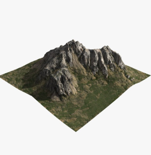

Uriel de Jesús Mendoza Castillo
Raul Sánchez Márquez
Repositorio GitHub
10 Montañas más altas de México.
Inicio
Acerca de
Lista Top 10
Formulario
Entidad Federativa:
Altitud:
Ruta:
Inicio:
Fin:
Mapa
Visualización 3D
